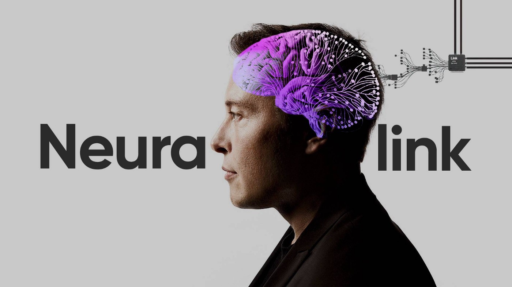

NeuraLink is a neurotechnology company developing implantable brain-machine interfaces. The goal of this is to enable people with paralysis to directly use their neural activity to operate computers. In addition, Neuralink will let people communicate with each other. This small implant could also help issues such as memory loss, hearing loss, depression and insomnia.

Click to hear Elon talk about NeuraLink's progress!
Controversy
Neuralink has been met with controversy in recent years as their product develops. There have been arguments surrounding privacy,security, and overall human wellness. To install a device like Neuralink, surgery into the human skull is required and what it could do to the human brain is something that some activists are advocating against. To look at recent NeuraLink news click the links below.